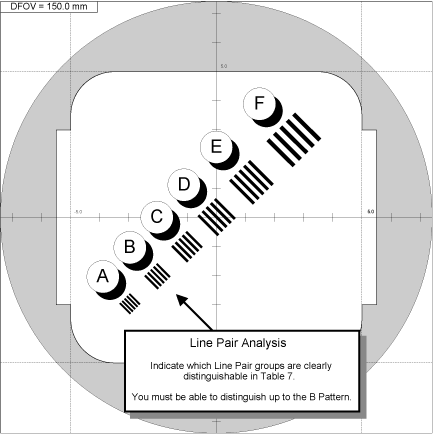
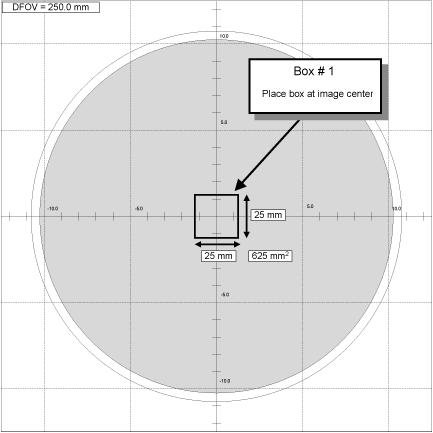

Proprietary to General Electric
Direction 5224328-800, Rev# 5
Dir 5224328-800 LightSpeed 5.X HP60 Limited Access Service
Methods - Adv.
Proprietary to General Electric |
| Required Persons | Preliminary Reqs | Procedure | Finalization |
|---|---|---|---|
| 1 |
Mount the Phantom Holder on the head-end of the table.
Mount the 20cm QA Phantom on the Phantom Holder.
Align, level, and center the 20cm QA Phantom.
Align the etched line (QA#1 position) on phantom using the internal laser lights.
Level phantom using bubble level and the Z Axis knob on the Phantom Holder.
Center phantom using the [CENTER PHANTOM] procedure in the left head [SCANNER UTILITIES ] selection and the X and Y Axis knobs on the Phantom Holder.
Set up the system to scan the QA#1, QA#2, and QA#3 positions on the 20cm QA Phantom.
MANUAL SCAN PROTOCOL SETUP
Refer to Table 1 and setup an Axial scan with the parameters shown
AUTO SCAN PROTOCOL SETUP
On the Exam Rx desktop, select [NEW PATIENT] .
Type the following entries in the listed Patient Information following fields:
Patient ID:Service
Name:20cm QA#3 Phantom Image Series
From the Protocol display, click on the infant box.
On the Infant display window, click on the area below the infant’s right foot to display the Miscellaneous menu.
Click on the [20:12 IMAGE SERIES QA] button.
When the scan prescription appears on the left monitor, select the 1st series.
Set internal Landmark.
Acquire the QA#1, QA#2 and QA#3 positions of the 20cm QA Phantom.
Table 1: 20cm QA Phantom Image Series Scan Parameters
| Series Description | QA#1 | Recon 2: Q | QA#2 | QA#3 |
| Scan Type | Axial Full 1.0 sec. | Recon #2 of Series #1-4 images | Axial Full 1.0 sec. | Axial Full 1.0 sec. |
| Start Loc. | I5.00 | S40.00 | S55.00 | |
| End Loc. | S5.00 | S50.00 | S65.00 | |
| Total # of Images | 4 | 8 | 8 | |
| Thick Speed | 10.0 2i | 10.0 2i | 10.0 2i | |
| Interval (mm) | 0.00 | 0.00 | 0.00 | |
| Tilt | S0.0 | S0.0 | S0.0 | |
| SFOV | Small | Small | Small | |
| kV | 120 | 120 | 120 | |
| mA | 260 | 260 | 260 | |
| Total Exposure Time | 2.0 sec. | 4.0 sec. | 4.0 sec. | |
| DFOV (cm) | 25.0 | 15.0 | 25.0 | 25.0 |
| Recon Type | Std | Bone | Std | Std |
Image Performance Verification:
Refer to “Auto 1x Image Analysis Tool - Overview” and “Auto-1x Image Analysis Sub-Tests: Descriptions” in Image Analysis Tools, for details on Auto 1x Image Analysis tools.
Specifications:
Each image of the series must pass 20cm QA#1 High Contrast Spatial Resolution parameter (Contrast Scale, Four-Image MTF Average and Visible Line Pair (for the first and second series scan parameters) specifications:
| Contrast Scale | 110.0 to 130.0 |
| MTF Average: | 0.65 to 1.0 |
| Visible Lines: | B, C, D, E, F |
Recommended Failure Recovery:
Check Phantom Alignment (leveling is critical) and repeat this scanning and High Contrast Spatial Resolution Performance Test.
Perform Alignment Procedures (POR Alignment, BOW Alignment, CBF/SAG Alignment, ISO Alignment, and Hot ISO Alignment), perform Full Calibration (Detailed Calibration and Auto CT# Adjust, and repeat this scanning and High Contrast Spatial Resolution Performance Test.
Illustration 1: 20cm QA#1 Phantom High Contrast Spatial Resolution (Visible Line Verification)

Select the third 20cm QA Phantom image series (QA#2 Holes) from the exam acquired in the previous section.
From the Global Control Palette, click on the [IMAGE WORKS] Desktop.
From the Image Works Desktop, select the [IMAGE WORKS BROWSER] window.
Select the exam and the third series acquired in the previous section.
Select the [VIEWER] button on the Image Works Browser window. Set up the viewer window for four-image viewing.
Build a 10 mm x 100 mm reference ROI Box using the Image Works Viewer tools.
Click on the grid button to place a grid on the first image.
Click on the [MEASURE] button and select the box ROI icon.
Adjust the size of the ROI box to be a rectangle of approximately 10 mm x 50 mm (500 mm2) box.
If required, magnify the image to adjust to proper dimensions. See Illustration 2 for additional ROI size and placement information.
Collect Mean values for two reference ROI Box positions on four (1st, 3rd, 5th, and 7th) of the eight 20cm QA#2 Phantom images.
If required, magnify the image to adjust to proper dimensions. See Illustration 2 for additional ROI placement information.
Adjust the Window setting of the image to [20] by simultaneously holding the center mouse button down while dragging the cursor to the left. Adjust level for a viewable image as shown in Illustration 2.
Position the reference ROI Box built in step 2 on the Plexiglas portion of the QA#2 phantom image without touching the water portion or the hole pattern. See Illustration 2.
Type prop a in the Image Works Accelerator Line followed by <Return> to propagate Box # 1 ROI (size and position) on the remaining images in the series.
Click on the [MEASURE] button and select the box ROI icon to display Box # 2. The system places an ROI box labeled # 2 at the center of the image with the exact same dimensions as Box # 1.
Reposition Box # 2 over the water portion of the QA#1 phantom image and directly above Box # 1 (Box # 2 position in Illustration 2).
Type prop a in the Image Works Accelerator Line followed by <Return> to propagate Box # 2 ROI (size and position) on the remaining images.
Record the Mean values of the 1st, 3rd, 5th, and 7th images in the series for each of the two box positions in .
View the 1st, 3rd, 5th, and 7th images of the QA#2 Holes Series, record the number of visible holes in Table 2, and verify each image meets specifications.
While viewing the 1st, 3rd, 5th, and 7th images, indicate in Table 2 the number of holes that can be visually distinguished. See Illustration 2.
Verify Visible Hole visual check meets specifications listed in Table 3 for the calculated Contrast Factor and record in the HHS Record Tables.
Illustration 2: 20cm QA#2 Phantom Low Contrast Detectability - Building and Placing Reference ROI Boxes

Table 2: 20cm QA#2 Phantom Low Contrast Detectability Image Performance Worksheet #1
| Image | Visible Holes Viewable at Window 20 | Box 1 Means (Plexiglas) | Box 2 Means (Water) | Contrast Factor (Box 1 Means - Box 2 Means) | Comments |
|---|---|---|---|---|---|
| 1 | |||||
| 3 | |||||
| 5 | |||||
| 7 | |||||
| Specifications | See Table 3 | n/a | n/a | 2.0 to 12.0 | n/a |
Table 3: 20cm QA#2 Phantom Visible Hole Specifications
| Contrast Factor Range (Box 1 Means - Box 2 Means) | Visible Number of Holes | Smallest Visible Hole Size | |
|---|---|---|---|
| Lower Limit* | Upper Limit* | ||
| 2.00 to 3.99 | 2 | 5 | 7.5mm |
| 4.00 to 7.99 | 3 | 5 | 5.0mm |
| 8.00 to 12.00 | 4 | 5 | 3.0mm |
| *Required number of visible holes depends on the contrast factor. | |||
Specifications:
At least two out of the four images of the series must pass the 20cm QA#2 Low Contrast Detectability parameter (Visible Hole Size for a calculated Contrast Factor) for the third series scan parameters specifications.
Recommended Recovery:
Check Phantom Alignment (leveling is critical) and repeat this scanning and High Contrast Spatial Resolution Performance Test.
Perform Alignment Procedures (POR Alignment, BOW Alignment, CBF/SAG Alignment, ISO Alignment, and Hot ISO Alignment), perform Full Calibration (Detailed Calibration and Auto CT# Adjust, and repeat this scanning and Low Contrast Detectability Performance Test.
Select the fourth 20cm QA#3 Phantom exam acquired in the previous section.
From the Global Control Palette, click on the [IMAGE WORKS] Desktop.
From the Image Works Desktop, select the [IMAGE WORKS BROWSER] window.
Select the exam and fourth (QA#3) series acquired in the previous section.
Select the [VIEWER] button on the Image Works Browser window. Set up the viewer window for four-image viewing.
Build a 31 x 31 pixel reference ROI Box using the Image Works Viewer tools.
Click on the grid button to place a grid on the first image.
Click on the [MEASURE] button and select the box ROI icon.
Adjust the size of the ROI box to be a square 15 mm x 15 mm (225 mm2) box. Tolerance: 15 mm ± 1 mm (196 mm2 to 256 mm2).
If required, magnify the image to adjust to proper dimensions. See Illustration 3 for additional ROI size and placement information.
Collect Mean values for five reference ROI Box positions on the eight 20cm QA#3 Phantom images.
If required, magnify the image to adjust to proper dimensions. See Illustration 3 for additional ROI placement information.
Position the reference ROI Box built in step 2 directly over the center of the image using the grid cross-hairs as a guide.
Type prop a in the Image Works Accelerator Line followed by <Return> to propagate Box # 1 ROI (size and position) on the remaining images in the series.
Click on the [MEASURE] button and select the box ROI icon to display Box # 2. The system places an ROI box labeled # 2 at the center of the image with the exact same dimensions as Box # 1.
Reposition Box # 2 to the left center portion on the first image.
Type prop a in the Image Works Accelerator Line followed by <Return> to propagate Box # 2 ROI (size and position) on the remaining images.
Record the Mean values of the eight images in the series for each of the five box positions in Table 4.
Each image can only display text for the mean, standard deviation, and box area for three images at a time. To view the data for a particular box, select the box on the image and the system displays the data for the box number selected.
Calculate the Brightness Uniformity and CT# values for each image in the series, record values in Table 5, and compare to specifications.
Calculate and record the average means values (AvXo) for the four outside Boxes (Boxes 2 through 5) for each of the images and record in Table 4.
Calculate and record the average center box (Box 1) means values (AvXc) for each row (2A1A: Images 1, 3, 5, and 7; 1B2B: Images 2, 4, 6, 8) in Table 5.
Calculate and record the average outside boxes (Box 2 through 5) means values (AvXo) for each row (2A1A: Images 1, 3, 5, and 7; 1B2B: Images 2, 4, 6, 8) in Table 5.
Calculate the Brightness Uniformity (AvXo - AvXc) value for each row and record in Table 5.
Verify Brightness Uniformity (AvXo - AvXc) value and the average CT# value (AvXc) for each row meets specifications listed in Table 5.
Record the 20cm QA#3 Phantom Brightness Uniformity (AvXo - AvXc) value and average CT# value (AvXc) for each row in the HHS Record Tables.
Illustration 3: 20cm QA#3 Phantom Brightness Uniformity & CT# Measurement - Building And Placing Reference ROI Boxes

Table 4: 20cm QA#3 Phantom CT# Brightness Uniformity & CT# Image Performance Worksheet
| Image | Box 1 (Center) | Box 2 (Left Center) | Box 3 (Top Center) | Box 4 (Right Center) | Box 5 (Bottom Center) | Outside Boxes Avg | |||||
|---|---|---|---|---|---|---|---|---|---|---|---|
| Means (Xc) | Means | Std dev | Means | Std dev | Means | Std dev | Means | Std dev | Means (AvXo) | Std dev (AvSDo) | |
| 1 | n/a | n/a | n/a | n/a | n/a | ||||||
| 2 | n/a | n/a | n/a | n/a | n/a | ||||||
| 3 | n/a | n/a | n/a | n/a | n/a | ||||||
| 4 | n/a | n/a | n/a | n/a | n/a | ||||||
| 5 | n/a | n/a | n/a | n/a | n/a | ||||||
| 6 | n/a | n/a | n/a | n/a | n/a | ||||||
| 7 | n/a | n/a | n/a | n/a | n/a | ||||||
| 8 | n/a | n/a | n/a | n/a | n/a | ||||||
| Box Size = | 196 mm2 to 256 mm2 |
| 15 mm (± 1 mm) x 15 mm (± 1 mm) | |
| 31 (± 2 pixels) x 31 (± 2 pixels) |
| Box Positions: | Box 1 = 0 mm x 0 mm |
| Box 2 = 0 mm x -80 mm | |
| Box 3 = 80 mm x 0 mm | |
| Box 4 = 0 mm x 80 mm | |
| Box 5 = -80 mm x 0 mm |
Table 5: 20cm Phantom CT# Brightness Uniformity & Noise Row Performance Worksheet
| Row | Images | Center Box Means (AvXc) | Outer Boxes Means Averages (AvXo) | Outer Boxes Means Averages minus Center Box Means (AvXo - AvXc) | Outer Boxes Standard Deviation Averages (AvSDo) | Comments |
|---|---|---|---|---|---|---|
| 2A1A | 1, 3, 5, 7 | n/a | ||||
| 1B2B | 2, 4, 6, 8 | n/a | ||||
| Specifications | 0.0 ± 3.0 | n/a | <± 3.0 | n/a | ||
Specifications:
Each Row (2A1A, 1B2B) of the series must pass 20cm QA#3 Phantom Brightness Uniformity and average CT# specifications:
| AvXo - AvXc: | < ± 3.0 |
| AvXc: | < ± 3.0 |
Recommended Recovery:
Perform [DETAILED CAL] .
Perform [AUTO CT# ADJUST] .
Repeat this procedure to verify 20cm QA#3 Phantom Image Performance.
Select the fourth 20cm QA#3 Phantom exam acquired in the previous section.
From the Global Control Palette, click on the [IMAGE WORKS] Desktop.
From the Image Works Desktop, select the [IMAGE WORKS BROWSER] window.
Select the exam and fourth (QA#3) series acquired in the previous section.
Select the [VIEWER] button on the Image Works Browser window. Set up the viewer window for four-image viewing.
Build a 51 x 51 pixel reference ROI Box using the Image Works Viewer tools.
Click on the grid button to place a grid on the first image.
Click on the [MEASURE] button and select the box ROI icon.
Adjust the size of the ROI box to be a square 25 mm x 25 mm (625 mm2) box. Tolerance: 25 mm ± 1 mm (576 mm2 to 676 mm2).
If required, magnify the image to adjust to proper dimensions. See Illustration 4 for additional ROI size and placement information.
Collect Standard Deviation values for the single reference ROI Box position on the eight 20cm QA#3 Phantom images.
If required, magnify the image to adjust to proper dimensions. See Illustration 4 for additional ROI placement information.
Position the reference ROI Box built in step 2 directly over the center of the image using the grid cross-hairs as a guide.
Type prop a in the Image Works Accelerator Line followed by <Return> to propagate Box # 1 ROI (size and position) on the remaining images in the series.
Record the Standard Deviation values of the eight images in the series for centered box position in Table 6.
Calculate the average Noise values for each image in the series, record values in Table 6, and compare to specifications.
Calculate and record the average Noise values (AvSDc) for the inside Boxes for each of the two rows (2A1A and 1B2B) and record in Table 6.
Verify Noise (AvSDc) values for each row meets specifications listed in Table 6.
Record the 20cm QA#3 Phantom Noise (AvSDc) for each row in the HHS Record Tables.
Illustration 4: 20cm QA#3 Noise Measurement - Building And Placing Reference ROI Box

Table 6: 20cm QA#3 Phantom Noise Performance Worksheet
| Image | Row | Box 1 Std Dev (SDc) | Average Std Dev (AvSDc) | AvSDc Specifications | Comments | |
|---|---|---|---|---|---|---|
| Systems w/ <5000 scans | Systems w/ >5000 scans | |||||
| 1 | 2A1A | 3.2 ± 0.3 | 3.2 ± 0.4 | |||
| 3 | ||||||
| 5 | ||||||
| 7 | ||||||
| 2 | 1B2B | |||||
| 4 | ||||||
| 6 | ||||||
| 8 | ||||||
| Box Size = | 576 mm2 to 676 mm2 |
| 25 mm (± 1 mm) x 25 mm (± 1 mm) | |
| 51 (± 2 pixels) x 51 (± 2 pixels) |
| Box Position: | Box 1 = 0 mm x 0 mm |
Specifications:
Each Row (2A1A, 1B2B) of the series must pass 20cm QA#3 Phantom Noise specifications shown in Table 6.
Recommended Recovery:
Perform [DETAILED CAL] .
Perform [AUTO CT# ADJUST] .
Repeat this procedure to verify 20cm QA#3 Phantom Image Performance.
No finalization required.